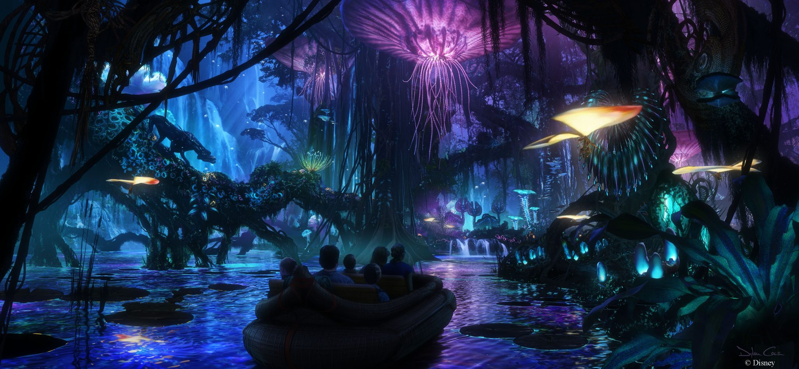
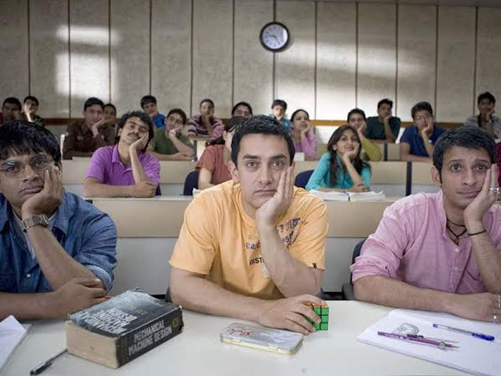
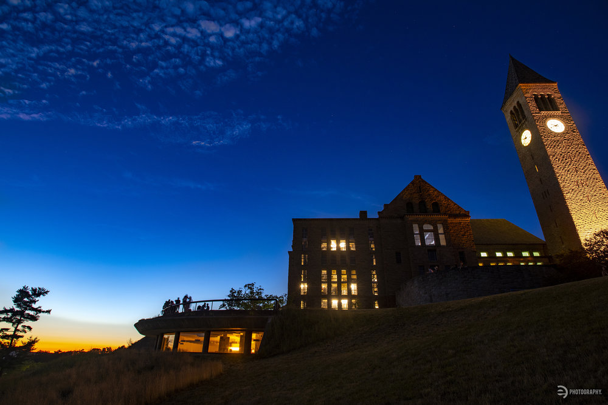
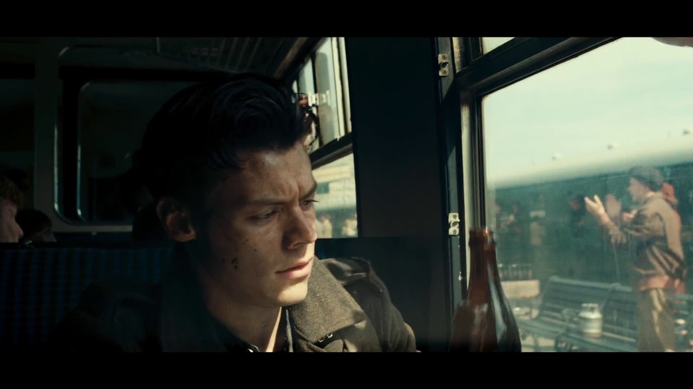

My motivation to learn Filming and cinematography comes from the recent finding of my desire to storytelling. When I was young, my parents like to bring me to the movie theater to watch movie with them. I always love the relaxing atmosphere of walking to the West Lake Movie Theater with my families, standing in the middle holding both my parents’ hand, and feeling the refreshing wind flowing by – A taste of childhood. Back in the 2008 days when the digital technology is not yet booming, watching movies takes a great role in a person’s entertainment life. I remember when I first saw Avatar when I was a 6th grader, my mind blew as well as the rest 300 audience sitting in the giant IMAX 3D theater. People kept talking about what cutting-edge technologies were used to bring these blue skinned Na’vi people afront, and how it would start a new era of science fiction films. I loved it so much that I even downloaded an Avatar adventure game on my Samsung flip phone, playing the Avatar character to make it jump onto stages after stages.
My brother Kaikai is also a huge movie fan, he has a single DVD that contains 20 movies: Harry Potter Series, and Lord of the Rings. Kaikai half introduced me to the world of movies. When I was in middle school, Kaikai recommended me Three Idiots, which at some point changed my life. When I see the students Rancho, Farhan, and Raju are living their life fullest in Imperial College of Engineering,
smiling and crying in the rise and falls of Indian tides, I was deeply impressed and wondered, would my life be so exciting if I study engineering in the future? I might not know the meaning of “Pursue excellent, and success will follow” when Rancho said this, however years later I finally understood people should pursue excellence of soul, the peace within heart. Whether success or not, it doesn’t matter, because who is the one that defines it? The only thing that I knew is that the melody “Give me some sunshine, give me some rain, give me another chance I wanna grow up once again…” and the piercing quest of freedom stays in my heart ever since. This impulse that belongs to youth is calling me.
Years later I was studying Computer Science in US and started my life as an engineer student. After some digging into the field, I realized that reading code all day long is not what I want to do for a future. Reading the code and debugging all day sparks my deepest desire to express myself
– I never had so many drifting feelings and desire to express before! Though technology is interesting and oftentimes creative, filming sounds so much more appealing to me because it combines the visuals, the sound, the conversation, the fragments of memory and desire for future, the fear, the joyous… a soul is entitled to it. And whatever is emphasized more is difference rather than conformity. Filming, to me, creates another perspective to see the world and every viewpoint has value.
There is something the film conveys that go beyond culture. I felt the same root connection to homeland after I saw thousands of soldiers in Dunkirk craving for home were taking the small boats, and then trains, and saw the news boy selling the news of the great Dunkirk retreat while the coffee breakfast is still steaming across the window. That concept in heart is called, home.
I felt the tears and power when I saw Wisler in Das Leben der Anderen stepped into the bookstore and flipped Sonate vom Guten Menschen, symphony that Georg wrote to him for a genuine thank of years of protection, even without knowing who he is. I felt the shock and despair when the human explorer in Space Odyssey sees the fourth and fifth dimension world scrolling open right in front of him with heavenly acoustics.

Not to mention so much Chinese Wuxia (Kung fu) films and series that I watched: the stubborn Yangguo who walks his own tortuous way of becoming an astonishing swordsman, the warm-hearted Guojing who dies protecting his city, the free-minded Chong who realizes the “way” of practicing swords without restraints of mind … They connect lands and cultures, families and generations, and crafted, dreams.
These characters have life, they are my dearest friends that accompany me through years of brightness and darkness. They come and leave, just as the golden memory of childhood has left along with the pre-information-explosion era, and the Big-Data and covid-isolation as come full speed. Now the digitals have dominated people’s life and gap between people are growing, we really need to create good films to capture the “thread” of our generation, and encourage the discussion of what we want to pursue.
Motivation Letter for Learning Films (FAMU, Prague)